Q2. Gray Scale Transforms on Images
Simple gray scale transforms on images. Dhruv Ilesh Shah, Dhanvi Sreenivasan and Bhavesh Thakkar
Contents
A. Linear Contrast Stretching
function img = myLinearContrastStretching(org) % Contrast Enhancement using Linear Contrast Stretching % Maps from current histogram to extended histogram, any aspect ratio org = im2double(org); % Works for any aspect ratio org_min = repmat(min(min(org)), size(org, 1), size(org, 2)); org_max = repmat(max(max(org)), size(org, 1), size(org, 2)); img = mat2gray((org - org_min) * 255 ./ (org_max - org_min));
% This function improves contrast by stretching the histogram to the whole % available color space. org = imread('../data/barbara.png'); tic; img = myLinearContrastStretching(org); toc; figure colormap(jet(200)); subplot(2, 2, 1), imagesc(org); title('Barbara') colorbar; subplot(2, 2, 2), imagesc(img); title('After LCS') colorbar; subplot(2, 2, 3), imhist(org); subplot(2, 2, 4), imhist(img); org = imread('../data/TEM.png'); tic; img = myLinearContrastStretching(org); toc; figure colormap(jet(200)); subplot(2, 2, 1), imagesc(org); title('TEM') colorbar; subplot(2, 2, 2), imagesc(img); title('After LCS') colorbar; subplot(2, 2, 3), imhist(org); subplot(2, 2, 4), imhist(img); % Since the histogram for most of these image was already quite wide, we cannot appreciate the function of the algorithm. Let's look at this image, instead. org = imread('satmap.png'); img = myLinearContrastStretching(org); figure subplot(2, 2, 1), imshow(org) title('satmap') subplot(2, 2, 2), imshow(img) title('After LCS') subplot(2, 2, 3), imhist(org) subplot(2, 2 ,4), imhist(img) org = imread('../data/canyon.png'); tic; img = myLinearContrastStretching(org); toc; figure('Position', [100 100 1500 600]) colormap(jet(200)); subplot(3, 4, 1), imshow(org); title('Canyon'); subplot(3, 4, 5), imshow(img); title('After LCS'); subplot(3, 4, 2), imagesc(org(:,:,1)); title('Channel 1') colorbar; subplot(3, 4, 6), imagesc(img(:,:,1)); colorbar; subplot(3, 4, 3), imagesc(org(:,:,2)); title('Channel 2') colorbar; subplot(3, 4, 7), imagesc(img(:,:,2)); colorbar; subplot(3, 4, 4), imagesc(org(:,:,3)); title('Channel 3') colorbar; subplot(3, 4, 8), imagesc(img(:,:,3)); colorbar; subplot(3, 4, 10), imhist(img(:,:,1)); subplot(3, 4, 11), imhist(img(:,:,2)); subplot(3, 4, 12), imhist(img(:,:,3));
Elapsed time is 0.274186 seconds. Elapsed time is 0.009582 seconds. Elapsed time is 0.025880 seconds.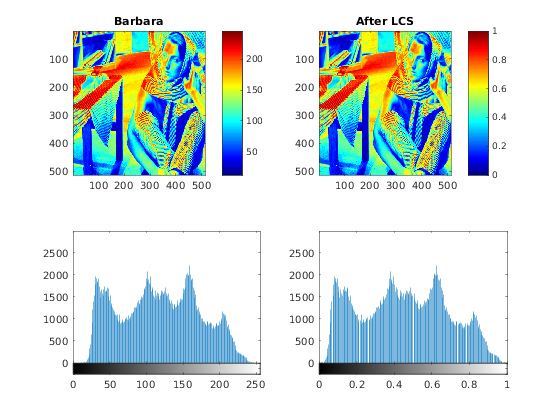 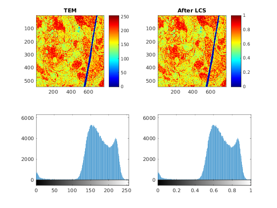 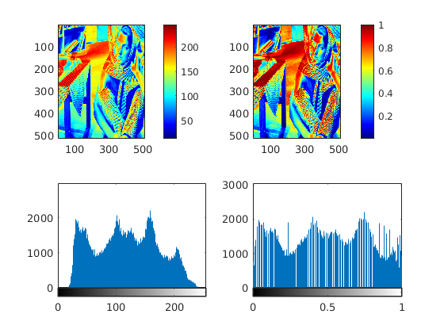 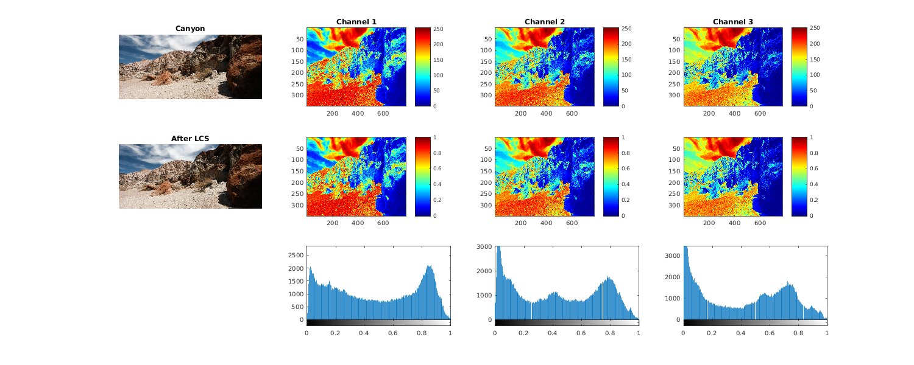
B. Global Histogram Equalization
function img = myHE(org) % Performs global histogram equalization on the input image. Works for any % number of channels. mycdf = zeros(256, size(org, 3)); % Treating channels independently for i = 1:size(org, 3) mycdf(:, i) = cumsum(imhist(org(:,:,i))) / numel(org(:,:,1)); end %img = arrayfun(mycdf(y, x), org); % arrayfun is not sped up by JIT compilation, and considerably slower in % this simple case, compared to naive loops. (ambiguous) img = zeros(size(org)); % Pre-allocating for k = 1:size(org, 3) % Computing independently for each channel cdfi = mycdf(:,k); img(:,:,k) = cdfi(org(:,:,k) + 1); end
% Evaluating for given grayscale images: org = imread('../data/barbara.png'); tic; img = myHE(org); toc; figure; colormap(jet(200)); subplot(2, 2, 1), imagesc(org); colorbar; subplot(2, 2, 2), imagesc(img); colorbar; subplot(2, 2, 3), imhist(org); subplot(2, 2, 4), imhist(img); org = imread('../data/TEM.png'); tic; img = myHE(org); toc; figure; colormap(jet(200)); subplot(2, 2, 1), imagesc(org); colorbar; subplot(2, 2, 2), imagesc(img); colorbar; subplot(2, 2, 3), imhist(org); subplot(2, 2, 4), imhist(img); % Since the histogram for this image was already quite wide, we are unable % to appreciate the function of the algorithm. Let's look at this image instead. org = imread('satmap.png'); img = myHE(org); figure subplot(2, 2, 1), imshow(org) subplot(2, 2, 2), imshow(img) subplot(2, 2, 3), imhist(org) subplot(2, 2 ,4), imhist(img) org = imread('../data/canyon.png'); tic; img = myHE(org); toc; figure('Position', [100 100 1500 600]) colormap(jet(200)); subplot(3, 4, 1), imshow(org); title('Original Image'); subplot(3, 4, 5), imshow(img); title('After Global HE'); subplot(3, 4, 2), imagesc(org(:,:,1)); title('Channel 1') colorbar; subplot(3, 4, 6), imagesc(img(:,:,1)); colorbar; subplot(3, 4, 3), imagesc(org(:,:,2)); title('Channel 2') colorbar; subplot(3, 4, 7), imagesc(img(:,:,2)); colorbar; subplot(3, 4, 4), imagesc(org(:,:,3)); title('Channel 3') colorbar; subplot(3, 4, 8), imagesc(img(:,:,3)); colorbar; subplot(3, 4, 10), imhist(img(:,:,1)); subplot(3, 4, 11), imhist(img(:,:,2)); subplot(3, 4, 12), imhist(img(:,:,3));
Elapsed time is 0.019803 seconds. Elapsed time is 0.011606 seconds. Elapsed time is 0.020172 seconds.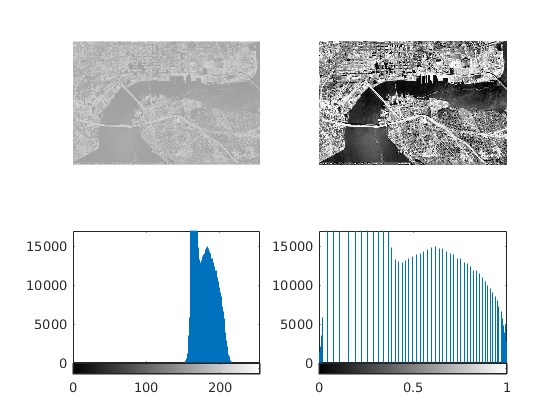 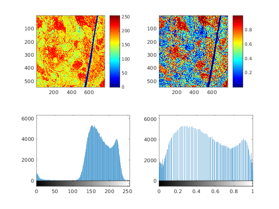 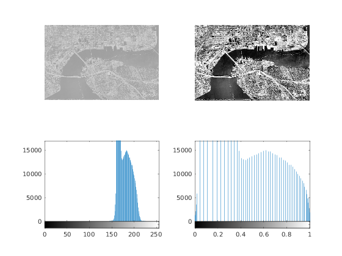 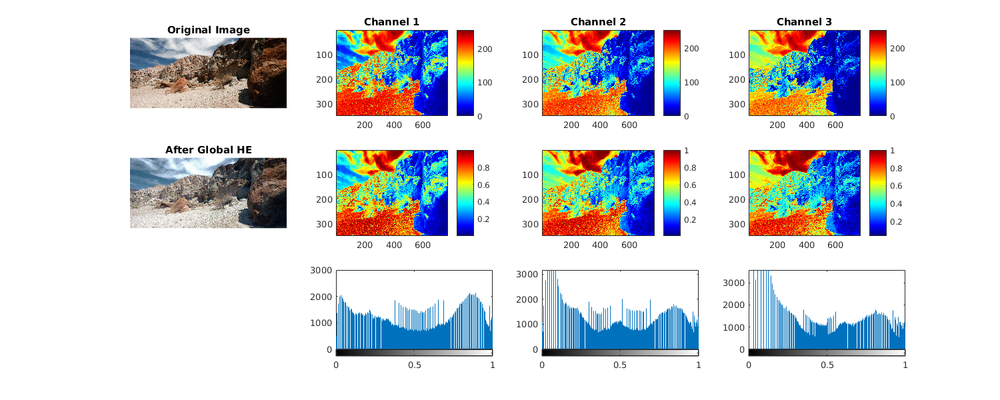
C. Adaptive Histogram Equalization
function img = myAHE(org, windowsize) % Performs Adaptive Histogram Equalization on the input image, with the % windowsize given by the argument passed. org = org+1; % Preserving the original blacks of the image [x, y, k] = size(org); orgp = zeros(size(org) + 2 * [windowsize, windowsize]); [xp, yp, k] = size(orgp); orgp(windowsize+1:xp-windowsize, windowsize+1:yp-windowsize) = org; img = zeros(size(orgp)); orgp = mat2gray(orgp); for i = windowsize+1:xp-windowsize for j = windowsize+1:yp-windowsize mypdf = imhist(orgp(i-windowsize:i+windowsize, j-windowsize:j+windowsize)); mypdf = mypdf(2:end); % Removing the border areas. Setting equal to second entry is by arguments of gradient and continuity mycdf = cumsum(mypdf)... / max(cumsum(mypdf)); img(i, j) = mycdf(max(round(orgp(i, j) * 255), 1)); end end img = img(windowsize+1:xp-windowsize, windowsize+1:yp-windowsize);
% Evaluating for the standard images given: org = imread('../data/barbara.png'); tic img = myAHE(org, 30); % Taking relevant window toc img2 = myAHE(org, 5); img3 = myAHE(org, 100); figure('Position', [100 100 700 700]) colormap(jet(200)); subplot(2, 2, 1), imagesc(org); title('Barbara') colorbar; subplot(2, 2, 2), imagesc(img); title('W = 30') colorbar; subplot(2, 2, 3), imagesc(img2); title('W = 5') colorbar; subplot(2, 2, 4), imagesc(img3); title('W = 100') colorbar; org = imread('../data/TEM.png'); tic img = myAHE(org, 35); % Taking relevant window toc img2 = myAHE(org, 5); img3 = myAHE(org, 100); figure('Position', [100 100 700 700]) colormap(jet(200)); subplot(2, 2, 1), imagesc(org); title('TEM') colorbar; subplot(2, 2, 2), imagesc(img); title('W = 30') colorbar; subplot(2, 2, 3), imagesc(img2); title('W = 5') colorbar; subplot(2, 2, 4), imagesc(img3); title('W = 100') colorbar; org = imread('../data/canyon.png'); % Computing AHE independently (Can be incorporated in the function itself, for better results) img_1 = myAHE(org(:,:,1), 30); img_2 = myAHE(org(:,:,2), 30); img_3 = myAHE(org(:,:,3), 30); img = cat(3, img_1, img_2, img_3); img2_1 = myAHE(org(:,:,1), 5); img2_2 = myAHE(org(:,:,2), 5); img2_3 = myAHE(org(:,:,3), 5); img2 = cat(3, img2_1, img2_2, img2_3); img3_1 = myAHE(org(:,:,1), 100); img3_2 = myAHE(org(:,:,2), 100); img3_3 = myAHE(org(:,:,3), 100); img3 = cat(3, img3_1, img3_2, img3_3); figure('Position', [100 100 1200 700]) colormap(jet(200)); subplot(3, 4, 1), imshow(img); title('W = 30'); subplot(3, 4, 5), imshow(img2); title('W = 30'); subplot(3, 4, 9), imshow(img3); title('W = 30'); subplot(3, 4, 2), imagesc(img_1); colorbar; subplot(3, 4, 3), imagesc(img_2); colorbar; subplot(3, 4, 4), imagesc(img_3); colorbar; subplot(3, 4, 6), imagesc(img2_1); colorbar; subplot(3, 4, 7), imagesc(img2_2); colorbar; subplot(3, 4, 8), imagesc(img2_3); colorbar; subplot(3, 4, 10), imagesc(img3_1); colorbar; subplot(3, 4, 11), imagesc(img3_2); colorbar; subplot(3, 4, 12), imagesc(img3_3); colorbar;
Elapsed time is 18.460071 seconds. Elapsed time is 45.844617 seconds.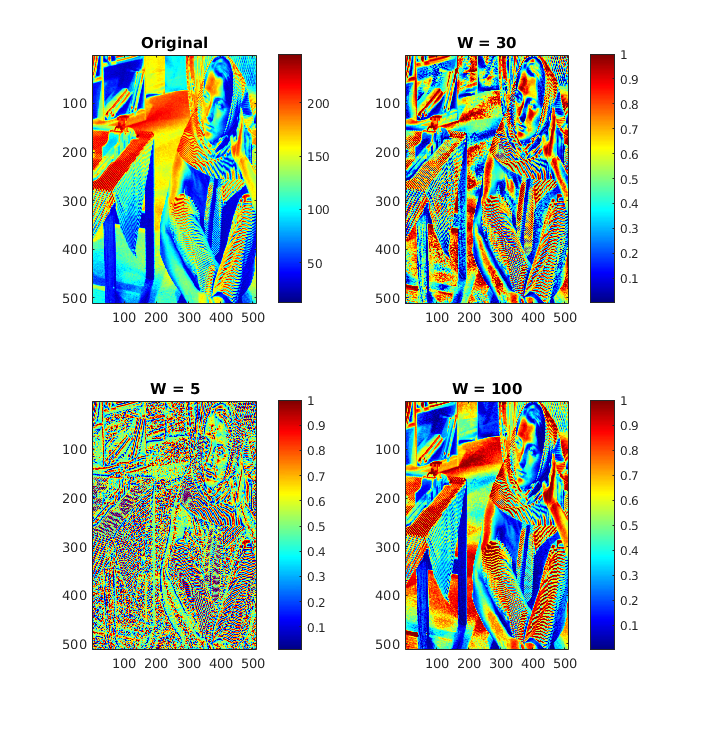 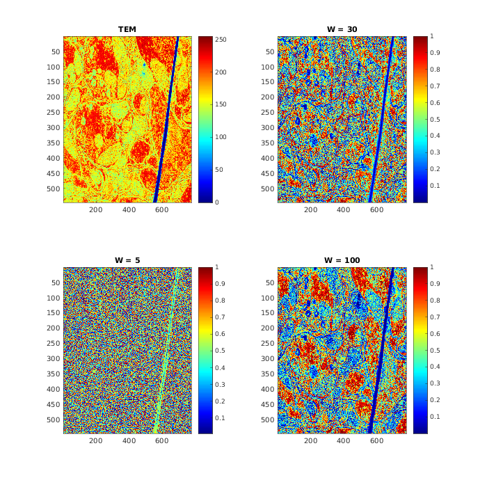 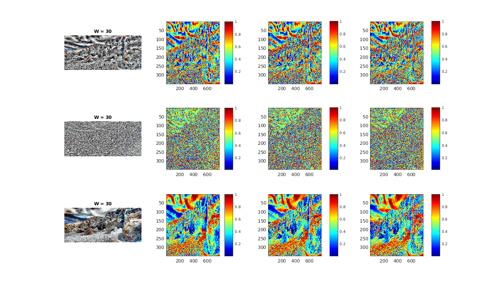
C. Contrast Limited Adaptive Histogram Equalization
function img = myCLAHE(org, windowsize, threshold) % Performs Contrast Limited Adaptive Histogram Equalization on the input % image, with the windowsize and threshold passed given by the argument passed. org = org+1; % Preserving the original blacks of the image [x, y, k] = size(org); orgp = zeros(size(org) + 2 * [windowsize, windowsize]); [xp, yp, k] = size(orgp); orgp(windowsize+1:xp-windowsize, windowsize+1:yp-windowsize) = org; img = zeros(size(orgp)); orgp = mat2gray(orgp); for i = windowsize+1:xp-windowsize for j = windowsize+1:yp-windowsize mypdf = imhist(orgp(i-windowsize:i+windowsize, j-windowsize:j+windowsize)); mypdf = mypdf(2:end); % Removing the border areas. Setting equal to second entry is by arguments of gradient and continuity num_el = max(cumsum(mypdf)); mypdf_clipped = min(mypdf, threshold*num_el); num_el_clipped = max(cumsum(mypdf_clipped)); mypdf_clipped = mypdf_clipped + (num_el_clipped - num_el)/255; mycdf = cumsum(mypdf_clipped)... / num_el; img(i, j) = mycdf(max(round(orgp(i, j) * 255), 1)); end end img = img(windowsize+1:xp-windowsize, windowsize+1:yp-windowsize);
% Evaluating for the standard images given: org = imread('../data/barbara.png'); tic img = myCLAHE(org, 40, 0.1); % Taking relevant window and thresholds toc img2 = myCLAHE(img, 40, 0.05); % Refining the contrast enhancement figure('Position', [100 100 500 500]) colormap(jet(200)); subplot(2, 2, 1), imagesc(org); title('Barbara') colorbar; subplot(2, 2, 2), imagesc(img); title('W = 40; T = 0.01') colorbar; subplot(2, 2, 3), imagesc(img2); title('Refined') colorbar; subplot(2, 2, 4), imshow(img); title('After CLAHE') org = imread('../data/TEM.png'); tic img = myCLAHE(org, 40, 0.1); % Taking relevant window and thresholds toc img2 = myCLAHE(img, 40, 0.05); % Refining the contrast enhancement figure('Position', [100 100 500 500]) colormap(jet(200)); subplot(2, 2, 1), imagesc(org); title('TEM') colorbar; subplot(2, 2, 2), imagesc(img); title('W = 40; T = 0.01') colorbar; subplot(2, 2, 3), imagesc(img2); title('Refined') colorbar; subplot(2, 2, 4), imshow(img); title('After CLAHE') org = imread('../data/canyon.png'); img_1 = myCLAHE(org(:,:,1), 40, 0.1); % Taking relevant window and thresholds img_2 = myCLAHE(org(:,:,2), 40, 0.1); img_3 = myCLAHE(org(:,:,3), 40, 0.1); img2_1 = myCLAHE(img_1, 40, 0.05); % Refining the contrast enhancement img2_2 = myCLAHE(img_2, 40, 0.05); img2_3 = myCLAHE(img_3, 40, 0.05); figure('Position', [100 100 1200 700]) colormap(jet(200)); subplot(3, 3, 1), imagesc(org(:,:,1)); title('Channel 1') colorbar; subplot(3, 3, 2), imagesc(org(:,:,2)); title('Channel 2') colorbar; subplot(3, 3, 3), imagesc(org(:,:,3)); title('Channel 3') colorbar; subplot(3, 3, 1), imagesc(img_1); title('W = 40; T = 0.01') colorbar; subplot(3, 3, 1), imagesc(img_2); colorbar; subplot(3, 3, 1), imagesc(img_3); colorbar; subplot(3, 3, 1), imagesc(img2_1); title('Refined') colorbar; subplot(3, 3, 1), imagesc(img2_2); colorbar; subplot(3, 3, 1), imagesc(img2_3); colorbar;
Elapsed time is 23.073327 seconds. Elapsed time is 40.266218 seconds.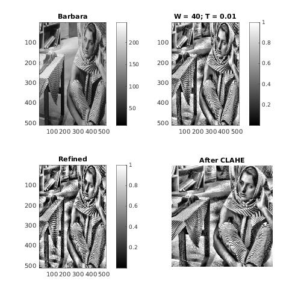 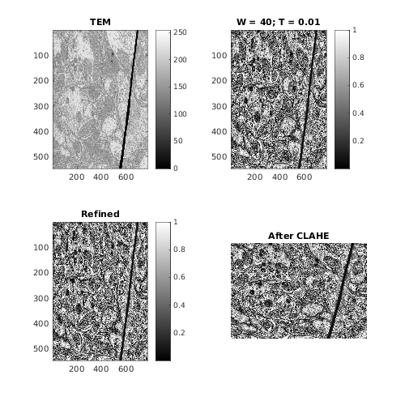 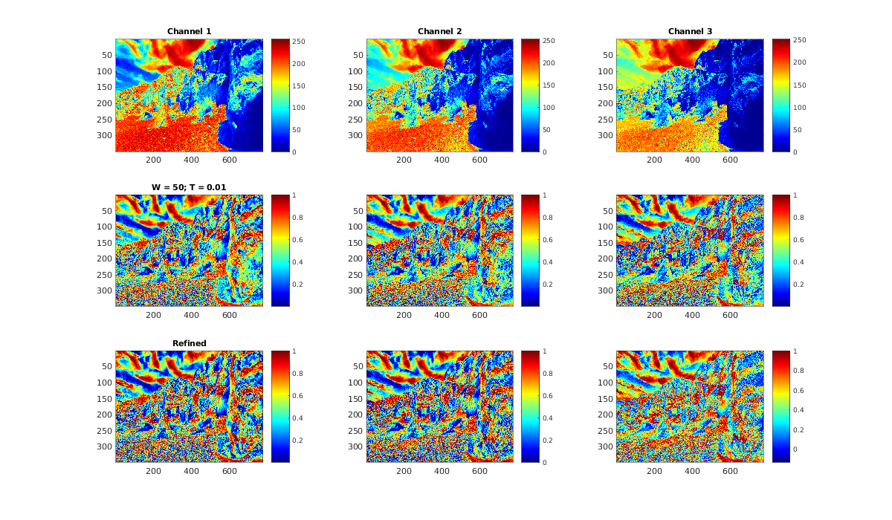
Thorough Analysis of AHE/CLAHE
Results from the thorough analysis of AHE and CLAHE, run with an exhaustive set of parameters can be found in the link given below. https://drive.google.com/drive/folders/0B3AJ0qIoMnDsUVU4YkM1blFoSkk?usp=sharing